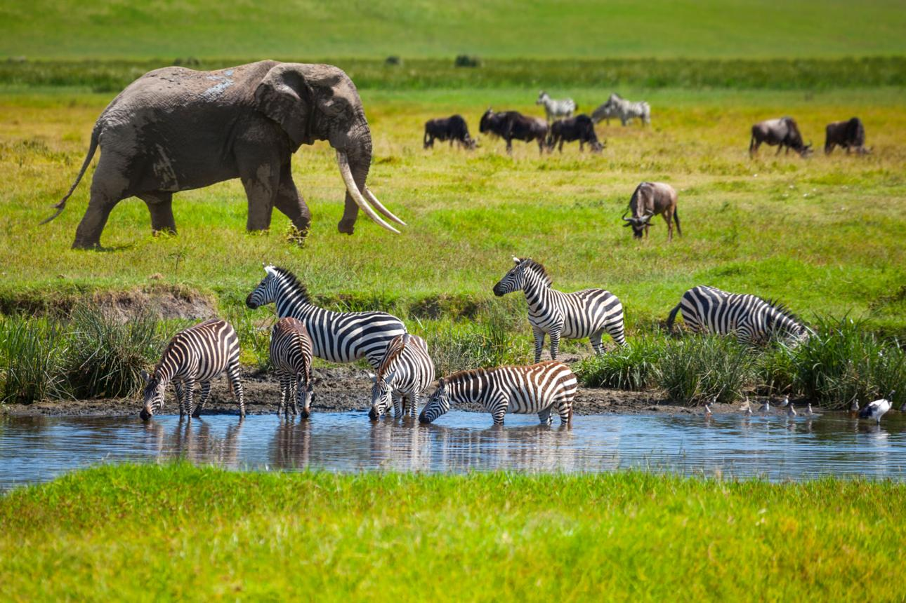
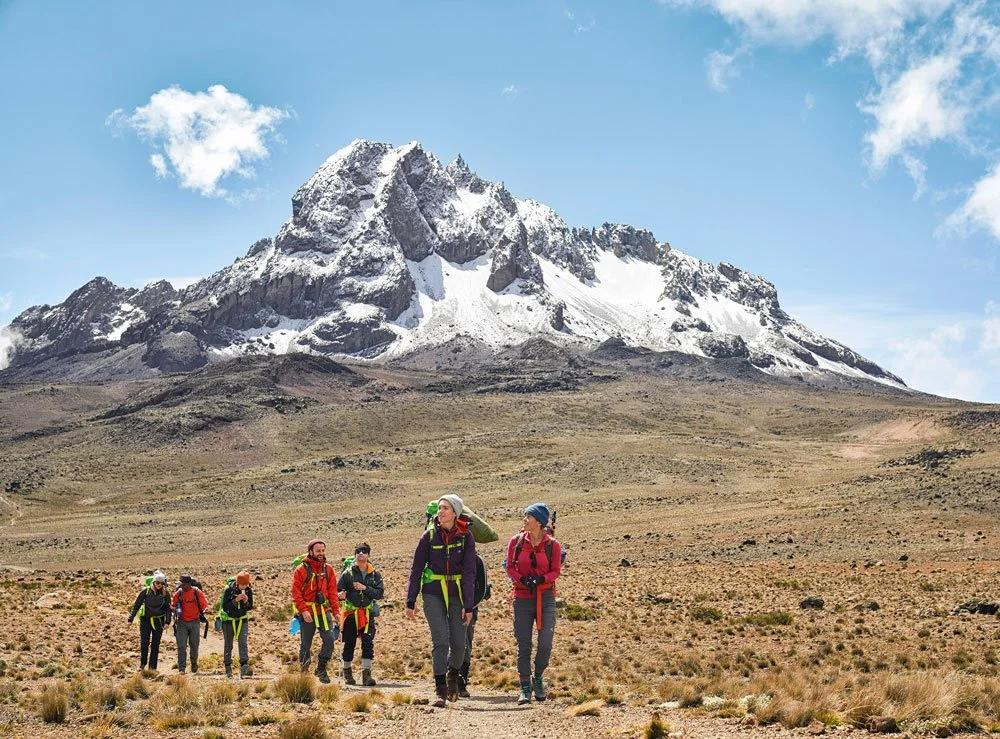
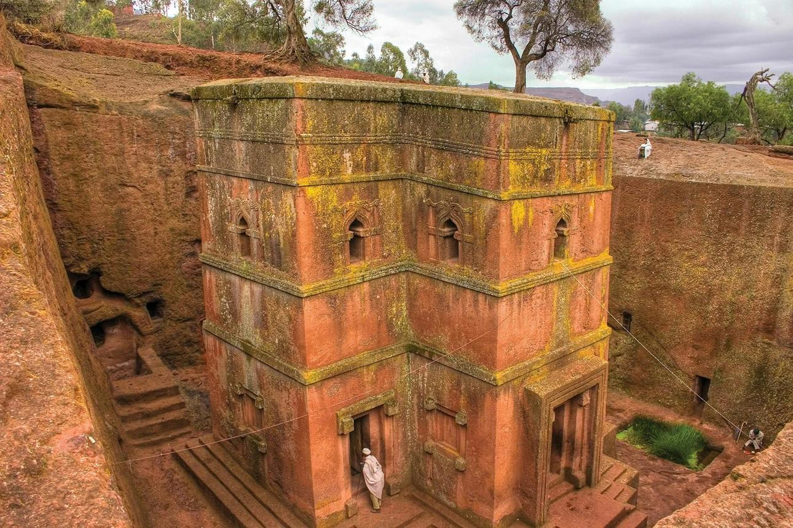
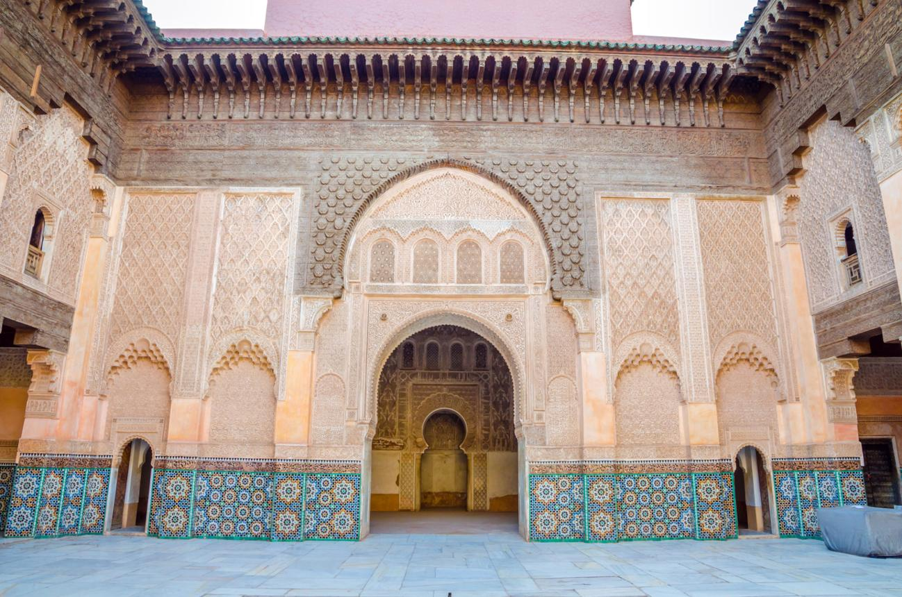
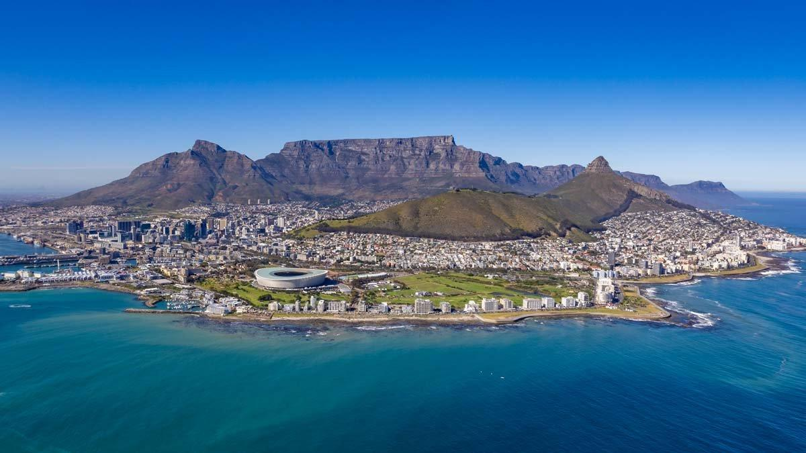
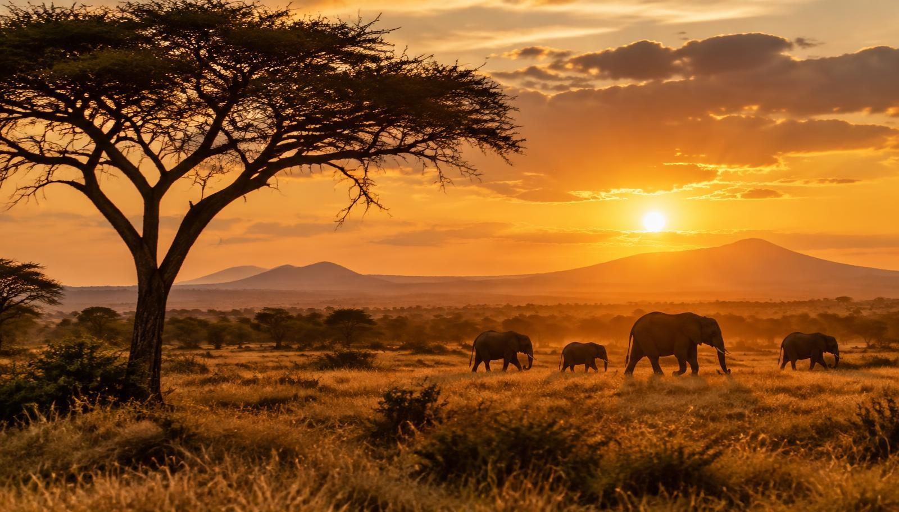
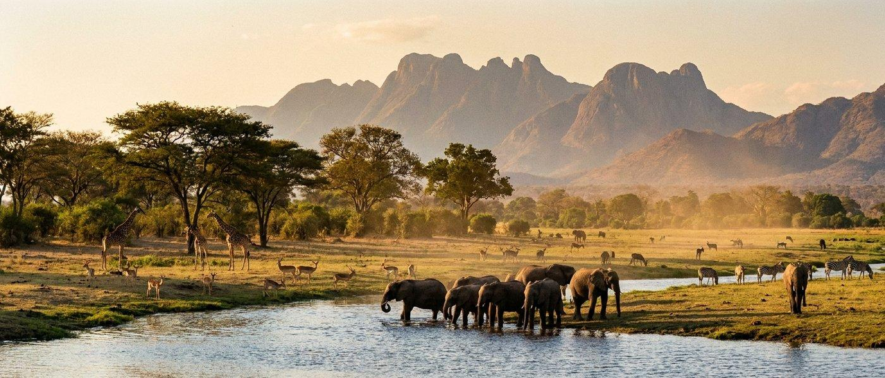

ITODO ATUMEYI
Creativity
Tourism Enthusiasm
Environmental Awareness
Collaboration
Critical Thinking
DISCOVER AFRICA
CULTURE | NATURE | ADVENTURE
Celebrating the beauty, diversity, wildlife and cultural heritage of the African continent. A tourism project inspired by my passion for Africa and its incredible destinations.
ABOUT THE CREATOR
My name is Itodo Atumeyi. I am a graduate of Environmental Science and Education from the University of Abuja, Nigeria. I graduated with a Second Class Upper Division degree.
My academic background developed my interest in environmental sustainability, research, environmental protection and the relationship between people and their natural surroundings.
Beyond my academic interests, I have a strong passion for tourism, African history, culture, wildlife and beautiful natural landscapes. I believe Africa has extraordinary destinations, traditions and experiences that deserve greater international recognition.
This passion inspired me to create Discover Africa, a tourism website designed to showcase the continent's beauty and encourage people to explore its many attractions.
I am also developing my skills in software engineering and web development. Through this project, I am combining creativity, technology and my interest in tourism to build an engaging digital experience.
MY SKILLS
HTML5 and CSS3
Web Design and Development
CSS Grid and Flexbox
Responsive Web Design
Git and GitHub
Environmental Research
Communication and Teamwork
Critical Thinking and Problem-solving
I continue to develop these skills through practical projects, independent learning and professional experience.
EDUCATION AND TRAINING
University of Abuja, Nigeria
Bachelor of Science in Environmental Science and Education.
Second Class Upper Division
Undergraduate Research
Environmental Impacts of Oil Exploration and Exploitation in the Niger Delta Region of Nigeria.
My research examined oil pollution, environmental degradation and the effects of oil exploration on local communities.
Software Engineering Development
Currently learning web development, HTML, CSS, JavaScript fundamentals and version control with Git and GitHub.


EXPLORE AFRICA
DISCOVER AFRICA
My personal tourism website project,
created to celebrate African destinations,
wildlife, culture and natural beauty.
QR CODE COMPONENT
A frontend development practice project
that helped me improve my understanding
of HTML and CSS.

BENTO GRID
A modern webpage layout developed to
practise CSS Grid, Flexbox and responsive
web design.

AFRICAN DESTINATIONS
Showcasing the beautiful landscapes,
attractions and travel opportunities
found across Africa.

AFRICAN HERITAGE
Promoting the continent's cultural diversity,
historical attractions and natural heritage.

PARTNERS AND COLLABORATORS
Discover Africa is built around the idea of promoting tourism through collaboration.
I believe that tourism agencies, hospitality businesses, travel organisations and local communities all have important roles to play in showcasing Africa to the world.
I welcome opportunities to connect with individuals and organisations interested in African tourism, culture, conservation and sustainable development.
GET IN TOUCH
Thank you for exploring Discover Africa. I would love to connect with people who share my passion for African tourism, technology, environmental sustainability and creativity.
Contact Itodo AtumeyiEXPLORE THE BEAUTY OF AFRICA
Discover new destinations. Experience different cultures. Celebrate the beauty of Africa.